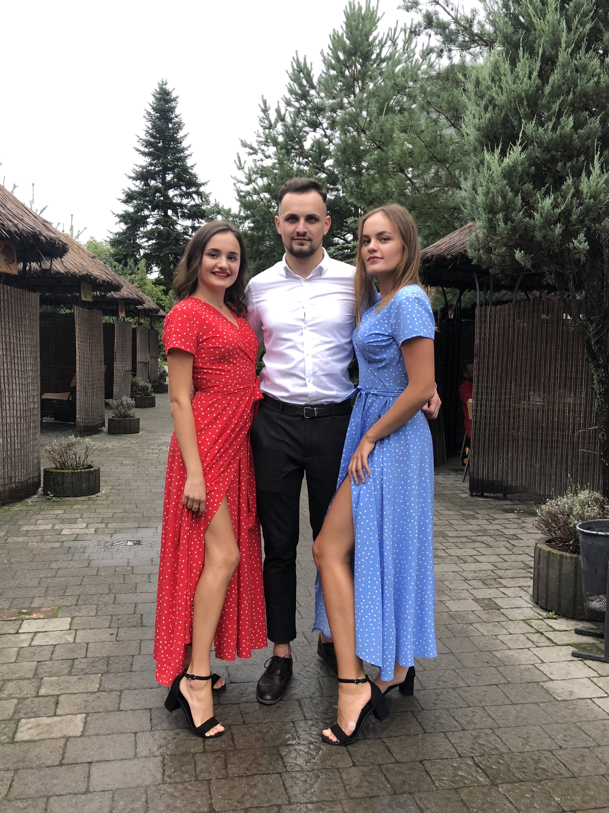

Ірина Струк
ПРО МЕНЕАвтобіографія
Я, Струк Ірина Тарасівна, народилась 3 листопада 2000 року в селі Соснівка, Львівської області. В сім'ї окрім мене ще є старший брат Назарій і сестра Соломія, з якою ми двійнята. В дитинстві в мене більше спільного було із старшим братом, як не дивно. Футбол, стрілянина з луку, виловлювати ящірок в озерах і Mortal Kombat на приставці мене цікавило в рази більше аніж гра в Барбі чи розфарбовувати малюнки.
Освіта
- 2007-2018 рр. - здобула повну загальну освіту в СЗШ №47 м.Винники.
- 2018 р. - вступила до НУ "Львівська політехніка"
Львів
вологість:
тиск:
вітер:
Погода на 10 днів від sinoptik.ua